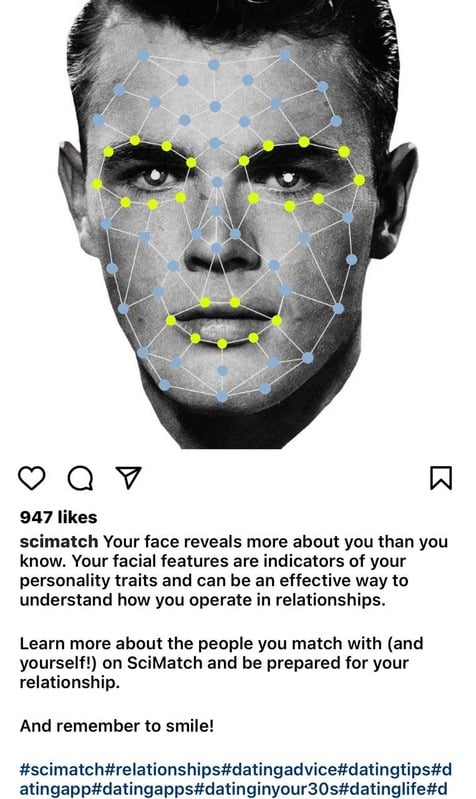
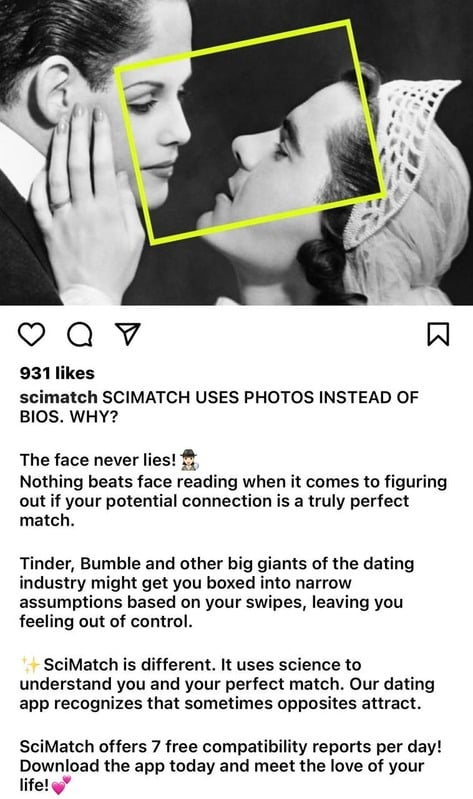
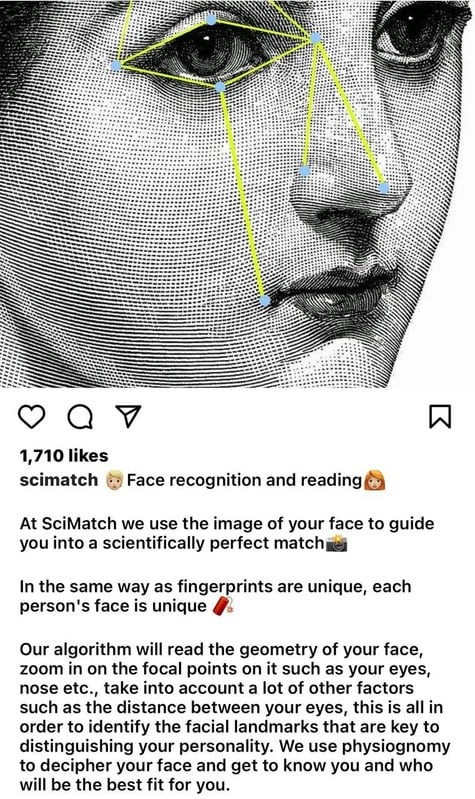

Scimatch
Making a science-first dating app legible to people who don't read science.
Situation
Scimatch matched people on facial physiognomy rather than swipes and bios. Genuinely differentiated — and genuinely hard to explain. Against Tinder and Bumble, "we read your face" reads as either a gimmick or a privacy problem unless the reasoning is made visible.
What I owned
Positioning and the content engine: how the mechanic gets explained, in what order, and through which formats — plus influencer distribution.
What I did
- Reframed the pitch from feature ("face recognition") to promise ("the face never lies") so the first line sells the outcome, not the tech.
- Built a post architecture that teaches the mechanic in three beats: why not bios → what a face reveals → how the algorithm reads it.
- Used the product's own visual language — landmark overlays on portraits — so every asset demonstrates the mechanic instead of describing it.
- Ran influencer outreach across a 300+ contact pipeline to seed the explanation with people users already trust.
Outcome
Posts carrying the mechanic outperformed generic lifestyle content — the explainer format reached 1,710 likes against a ~930 baseline. The three-beat structure became the default template for the channel.


